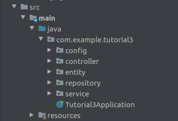
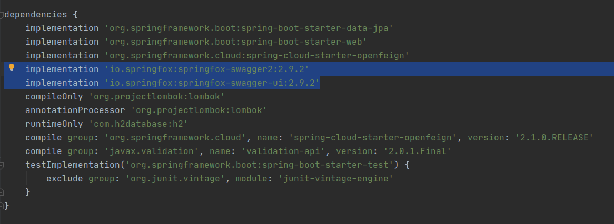

Desenvolvendo Restful API com Spring Boot.
GRUPO: 2
- Maicon Nei
- Gustavo Marinho
- Guilherme Caes
Pré-requisitos
Objetivo
O objetivo principal desse projeto é inicializar um projeto Spring utilizando o Spring Boot e construir APIs RESTFul para demonstrar os principais tipos de requisição HTTP utilizadas nessas aplicações. Como objetivo secundário, irei inserir a ferramenta Swagger-UI como dependência do projeto para ajudar a documentar e visualizar as APIs e realizar requisições para nossos endpoints.
Um pouco sobre conceitos
O que é Spring Boot?
Spring Boot é uma ferramenta que visa facilitar e otimizar o processo de configuração de aplicações Spring fornencendo a maior parte dos componentes de forma pré-configurada. O objetivo é possibilitar a publicação de aplicações em produção de maneira rápida. Por meio do Spring Initializr é possível gerar um projeto Maven ou Gradle pré-configurado selecionando todas as dependências e módulos que serão necessárias para o desenvovlimento da sua aplicação.
O que é REST?
REST (Representational State Transfer) significa Transferência de Estado Representacional. É uma abstração da arquitetura
web e define um conjunto de constantes e regras para criação de serviços web.
Uma API REST é uma interface de dados que fornece dados baseados em requisições HTTP utilizando verbos para definir sua finilidade
(GET, POST, PUT, DELETE). De modo geral o corpo dessas requisições é um JSON.
Um exemplo divertido de visualizar os HTTP status: https://http.cat/

Apresentando o Exemplo
Para demonstrar algumas APIs REST desenvolvidas no tutorial 3, considere a espeficicação abaixo:
O sistema ao ser inicializado, deve expor na URL
uma interface de documentação de APIs que deverá conter 4 endpoints documentados.
Os endpoints devem manipular um objeto Book (representa um livro) que deverá ter os atributos:
id e nome.
São os endpoints:
GET /v1/books/all que retornará todos os livros na base de dados
GET /v1/books/{id} que retornará somente o livro com o id solicitado
POST /v1/books que cadastrará um novo livro
PUT /v1/books/{id} que atualizará um livro na base
PARTE 1: Criação do projeto utilizando Spring Initializr
Criando o projeto
Pelo site https://start.spring.io/, iremos gerar um projeto base que será utilizado para desenvolvermos nossas APIs. Devemos selecionar as seguintes opções no Initializr:
- Maven project
- Java
- Spring Boot 2.3.2
- Packing JAR
- Java 8
Inicialmente, devemos adicionar as seguintes dependências no projeto:
- H2 Database
- Spring Data JPA
- Lombok
- Spring Boot DevTools

Após a seleção de todos os componentes basta baixar o zip, descompacta-lo e abri-lo como um projeto Gradle na sua IDE. Recomendo e utilizarei o Intellij no tutorial 3.
Implementação
Primeiros passos na estrutura do projeto
Inicialmente, vamos criar a estrutura de pastas que iremos utiliazar. Como a arquitetura do software não é o foco do tutorial, irei adotar uma arquitetura simples de três camadas: Controller, Service e Repository. Ficamos então dessa forma:

Dentro da pasta src/main/java/com.example.tutorial3 foram criadas algumas pastas que serão utilizadas ao longo do tutorial:
- config - Onde ficarão classes de configuração como por exemplo a classe SwaggerConfig.
- controller - Pacote onde ficarão os Controllers da aplicação, que serão as interfaces de entrada para das requisições HTTP.
- entity - Pacote onde ficarão as entidades utilizadas na aplicação. No caso do tutorial 3 a entidade Book.
- repository - Pacote onde ficarão classes de repositório.
- service - Pacote onde ficarão classes de serviço que concentrarão as lógicas de negócio de casos de uso da aplicação.
Dentro da pasta resources, o projeto virá com o arquivo application.properties. Irei renomea-lo para application.yml para facilitar a inserção de informações de configuração. Ainda dentro da pasta resources, irei inserir um arquivo chamado data com extensão sql. Irei explica-lo logo abaixo. A pasta resource ficará da seguinte maneira:
Classes e arquivos de configurações
H2 Database
Inicialmente, iremos realizar a configuração do H2 Database que é um banco de dados em memória que adicionamos nas depependências do projeto. No arquivo application.yml, iremos inserir algumas informações que permitirão a aplicação identificar o H2 como datasource e também habilitar um console do H2 que poderá facilitar na visualização de dados durante a execução dos exemplos e comprovação de conceitos. Sendo assim, devemos inserir o seguinte bloco no arquivo yml:
spring:
datasource:
url: jdbc:h2:mem:testdb
driverClassName: org.h2.Driver
username: h2
password: h2
h2:
console:
enabled: true
Swagger UI
O Swagger UI é uma ferramenta para documentação de APIs que disponibiliza uma ferramenta com interface gráfica que facilita muito a forma de fazer as requisições e visualizar os models, payloads e reponses das APIs documentadas. Para inseri-lo no projeto, teremos de adiciona-lo nas dependênciasdo gradle, visto que ele não estava disponível no site do Initializr para pré-configuração do projeto.
Para isso, vamos seguir os passos:
implementation 'io.springfox:springfox-swagger2:2.9.2'
implementation 'io.springfox:springfox-swagger-ui:2.9.2'

A partir daí, o Gradle irá baixar as dependências do Swagger.
Agora, dentro da do package de config, devemos criar uma classe chamada SwaggerConfig.java que será anotado como @Configuration para que o Spring utilize o resolva como classe de configuração e possamos utilizar a interface gráfica de documentação de APIs.
Implementação das APIs
Iremos implementar 3 classes que farão o fluxo de dados da nossa API: Controller, Service e Repository.
Cada uma delas dentro de seu respectivo package e seguindo boas práticas, com um sulfixo.
Também iremos implementar uma classe de Entidade que servirá de modelo para as requisições.
Normalmente, são utilizados padrões de VO/DTO para implementar a transferência de dados entre a camada REST e
as outras camadas da aplicação, porém, como não é meu objetivo me aprofundar em nenhum design pattern, utilizei
a entidade como corpo de requisição de algumas APIs.
Entity
Controller
Service
Repository
Testando as APIs pelo Swagger-UI e H2 Console
Executando a aplicação, acesse a URL. Você encontrar a página que foi documentadas pela classe do SwaggerConfig e os endpoints que foram referenciados com as anotações do swagger na classe BookController.class.
Ao clicar no book-controller, teremos acesso a todos os endpoints documentados na classe BookController e podemos testar as requisições.
Após selecionar uma das APIs (recomendo a API de Get All Books para primeiro teste), basta clicar em "Try it out" e em em seguida clicar em execute. O Swagger exibirá o código de retorno da requisição.
OBS: Como havia mencionado anteriormente, no setup do H2 Database, criamos um arquivo data.sql que terá scripts com massa de dados que serão inseridos no banco em memória sempre que a aplicação for executada. Isso possibilitará que o teste com o GET /all Books retorne alguns dados que já estarão inseridos na aplicação, sem que haja necessidade de inserção de dados por meio do método POST para que algum GET retorne algum dado.
Outra maneira de visualizar a massa de dados e inserção/atualização dos dados além dos métodos GET, seria utilizar o console
do H2 Database que habilitamos inserindo a config no arquivo application.yml
Acessando a URL, é possível visualizar a tela de login para o console do H2.
Inserindo os dados de login inserindos no application.yml é possível logar no console
username: h2
password: h2